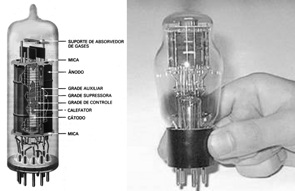
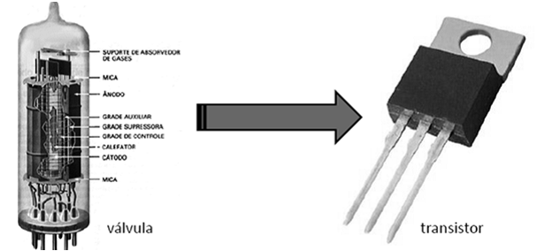
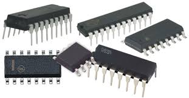
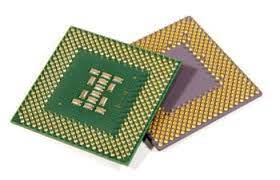
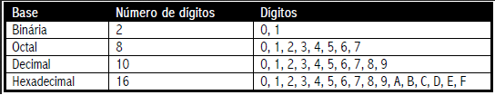
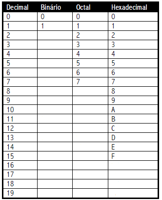

Evolução dos Computadores e Número Binário
Vídeo Aula 1
Evolução dos Computadores
A evolução dos computadores acompanhou a evolução da sociedade durante os séculos XX e XXI. Entretanto, a história do computador não teve início apenas na modernidade. Lembre-se que os computadores são aparelhos eletrônicos que recebem, armazenam e produzem informações de maneira automática. Eles fazem parte do nosso cotidiano, sendo cada vez maior o número de computadores usados no mundo.
A palavra “computador” vem do verbo “computar” que, por sua vez, significa “calcular”. Sendo assim, podemos pensar que a criação de computadores começa na idade antiga, já que a relação de contar já intrigava os homens.
Dessa forma, uma das primeiras máquinas de computar foi o “ábaco”, instrumento mecânico de origem chinesa criado no século V a.C.Assim, ele é considerado o “primeiro computador”, uma espécie de calculadora que realizava operações algébricas.
No século XVII, o matemático escocês John Napier foi um dos responsáveis pela invenção da "régua de cálculo". Trata-se do primeiro instrumento analógico de contagem capaz de efetuar cálculos logaritmos. Essa invenção foi considerada a mãe das calculadoras modernas.
Por volta de 1640, o matemático francês Pascal inventou a primeira máquina de calcular automática. Essa máquina foi sendo aperfeiçoada nas décadas seguintes até chegar no conceito que conhecemos hoje. A primeira calculadora de bolso capaz de efetuar os quatro principais cálculos matemáticos, foi criada por Gottfried Wilhelm Leibniz.Esse matemático alemão desenvolveu o primeiro sistema de numeração binário moderno que ficou conhecido com "Roda de Leibniz".
A primeira máquina mecânica programável foi introduzida pelo matemático francês Joseph-Marie Jacquard. Tratava-se de um tipo de tear capaz de controlar a confecção dos tecidos através de cartões perfurados.George Boole (1815-1864) foi um dos fundadores da lógica matemática. Essa nova área da matemática, se tornou uma poderosa ferramenta no projeto e estudo de circuitos eletrônicos e arquitetura de computadores.
Já no século XIX, o matemático inglês Charles Babbage criou uma máquina analítica que, a grosso modo, é comparada com o computador atual com memória e programas. Através dessa invenção, alguns estudiosos o consideram o “Pai da Informática”.Assim, as máquinas de computar foram cada vez mais incluindo a variedade de cálculos matemáticos (adição, subtração, divisão, multiplicação, raiz quadrada, logaritmos, etc).
Evolução dos Computadores
O computador, tal qual conhecemos hoje, passou por diversas transformações e foi se aperfeiçoando ao longo do tempo, acompanhando o avanço das áreas da matemática, engenharia, eletrônica. É por isso que não existe somente um inventor.
De acordo com os sistemas e ferramentas utilizados, a história da computação está dividida em quatro períodos.
Primeira Geração (1951-1959)
Os computadores de primeira geração funcionavam por meio de circuitos e válvulas eletrônicas. Possuíam o uso restrito, além de serem imensos e consumirem muita energia. Um exemplo é o ENIAC (Eletronic Numerical Integrator and Computer) que consumia cerca de 200 quilowatts e possuía 19.000 válvulas.

Segunda Geração (1959-1965)
Ainda com dimensões muito grandes, os computadores da segunda geração funcionavam por meio de transistores, os quais substituíram as válvulas que eram maiores e mais lentas. Nesse período já começam a se espalhar o uso comercial.

Terceira Geração (1965-1975)
Os computadores da terceira geração funcionavam por circuitos integrados. Esses substituíram os transistores e já apresentavam uma dimensão menor e maior capacidade de processamento. Foi nesse período que os chips foram criados e a utilização de computadores pessoais começou.
\ 
Quarta Geração (1975-até os dias atuais)
Com o desenvolvimento da tecnologia da informação, os computadores diminuem de tamanho, aumentam a velocidade e capacidade de processamento de dados. São incluídos os microprocessadores com gasto cada vez menor de energia. Nesse período, mais precisamente a partir da década de 90, há uma grande expansão dos computadores pessoais. Além disso, surgem os softwares integrados e a partir da virada do milênio, começam a surgir os computadores de mão. Ou seja, os smartphones, iPod, iPad e tablets, que incluem conexão móvel com navegação na web.

Segundo a classificação acima, nós pertencemos à quarta geração dos computadores, o que revela uma evolução incrível nos sistemas de informação. Um ponto de destaque é que a evolução dos computadores ocorria de maneira mais lenta. Com o desenvolvimento da sociedade, meios de comunicação e a divulgação científica podemos ver a evolução dessas máquinas em dias ou meses.
Alguns estudiosos preferem acrescentar a “Quinta Geração de Computadores” com o aparecimento dos supercomputadores, utilizados por grandes corporações como a NASA. Nessa geração, é possível avaliar a evolução da tecnologia multimídia, da robótica e da internet.
Número Binário
Um número binário é uma representação alternativa de um número utilizando apenas dois dígitos.
Na nossa vida diária usamos o sistema numérico decimal. Nele os números são representados usando dez símbolos diferentes conhecidos como os dígitos de 0 a 9: Podemos escrever diferentes quantidade sutilizando a combinação destes símbolos em posições diferentes, tais como:3487, 145 ou 18.
No sistema binário, os números são representados utilizando dois diferentes símbolos que são 0 o 1 e o . Podemos escrever diferentes quantidades usando combinações destes símbolos em diferentes posições como: 1011110, 1111 ou 100.
Normalmente podemos escolher uma quantidade qualquer de símbolos e ainda podemos representar qualquer número. A esta quantidade chamaremos de base do sistema numérico. Então, quando você escutar sistema em base dez, já saberá que se refere ao sistema de numeração decimal e quando escutar sistema em base dois saberá que se refere ao sistema numérico binário.
"Existem vários sistemas numéricos de bases diferentes, os mais utilizados são o binário (base 2), ou o octal (base 8), decimal (base 10) e hexa decimal (base 16)."

Como transformar um número decimal em binário?
Para converter um número decimal no seu equivalente binário, devemos fazer sucessivas divisões sobre a base, que é 2, até que não seja mais possível dividir. Em seguida, construímos o número binário com o último quociente e com o resto. Veja tudo detalhadamente aqui neste vídeo.
Como transformar um número binário em decimal?
Para converter um número binário em decimal pegamos cada um dos seus dígitos e o multiplicamos pela base, que é 2, elevado à potência correspondente de acordo com a sua posição e, em seguida somamos os resultados.
Mas para que serve isso?
O sistema binário é a base da tecnologia digital, qualquer dispositivo que tenha circuitos integrados (chips) só é possível graças a este sistema numérico.Por conta do sistema binário ser o sistema numérico mais simples, porque só usa dois dígitos, é possível armazenar e manusear os números em forma física, por exemplo, como a eletricidade que viaja através de um fio ou cabo, também como a luz que viaja através de uma fibra ótica, como campos magnéticos em um disco rígido ou ainda como sinais eletromagnéticos que viajam através do ar.
Graças a forma física dos números binários, é possível que eles existem dentro de um microprocessador, de uma memória ou de um disco rígido do seu computador ou ainda que viaje pela internet ou por uma rede wi-fi.
O que é mais útil num sistema numérico binário é que eles podem se materializar com poucos elementos físicos.
Exercícios de Fixação
01. Qual o significado do termo computador? E historicamente como ficou conhecido umas das primeiras máquinas utilizada para a realização de cálculos?
02. Do que se tratava a primeira máquina mecânica programável?
03. Identifique qual a evolução ocorrida em cada geração na evolução computacional?
04. O que é um número binário?
05. Complete a seguinte tabela?

06. Converter os seguintes valores binários em valores decimais equivalentes (conversão de base 2 para base 10).
a) 1100011
b) 10101111101
c) 101101
d) 1101110
e)1100100001
07. Converter os seguintes valores decimais em valores binários equivalentes (conversão de base 10 para base 2)
a) 417
b) 113
c) 819
d) 77
e)180